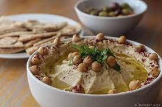

Odin Recipes Project
Hummos

The mandatory Friday breakfast dish, in every Jordanian house, every friday, between 9:00 am - 1:00 pm
A bowl of hummos with freshly baked Shrak bread alongside a cup of tea and a plate of tomatoes, cucumbers & shive is literally all you need to become the best version of yourself.
Ingredients
- Shrak bread
- Falafel, freshly cooked (optional)
- Hummos, made with the traditional Palestinian Recipe
- A plate with sliced tomatoes, cucumbers & shive (optional: sprinkle some salt and pepper on tomatoes)
- Mint Tea (regular tea is fine too)
Steps
- Step 1: Either go to a hummos restaurant that makes the plate for you (recommended) or get your own mixture at home but make sure you follow a Jordanian recipe
- Step 2: Rip a piece of the shrak bread, size is 2 finger tips long and wide, or bite sized, up to personal preference
- Step 3: Either bite a third of a Falafel or eat a slice of (seasoned) tomatoes, cucumbers or shive/li>
- Step 4: (Optional) Make yourself a nice warm cup of tea, ideally, freshly picked mint tea
- Step 5: Enjoy!